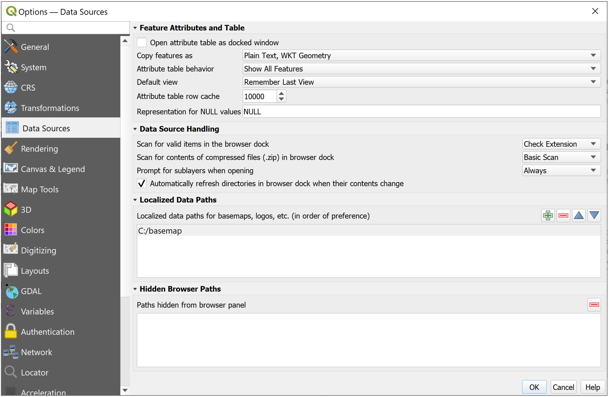
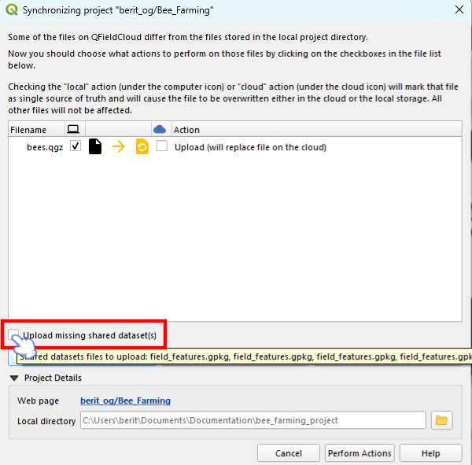
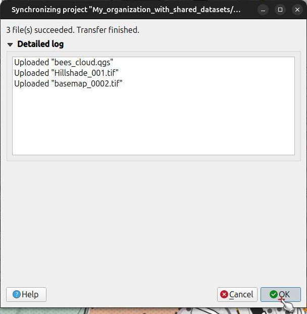
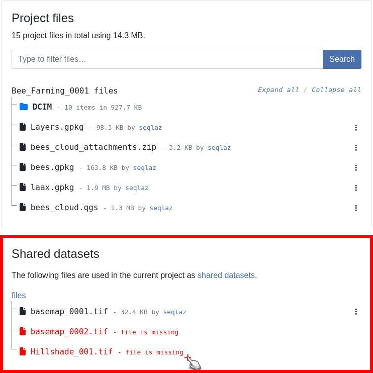
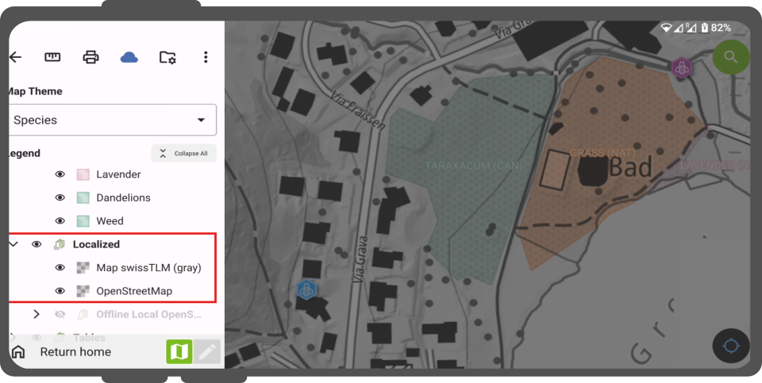
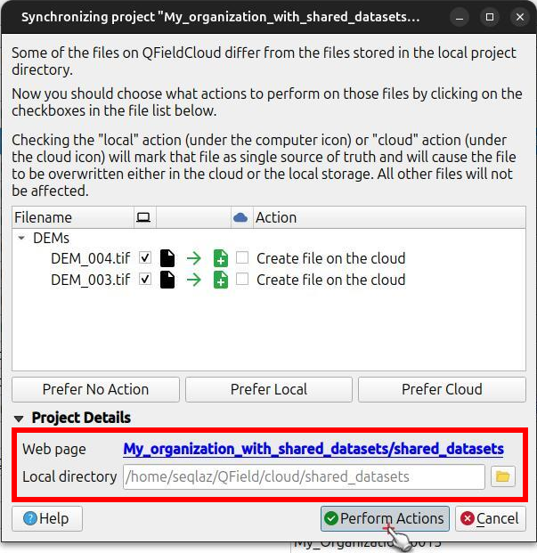
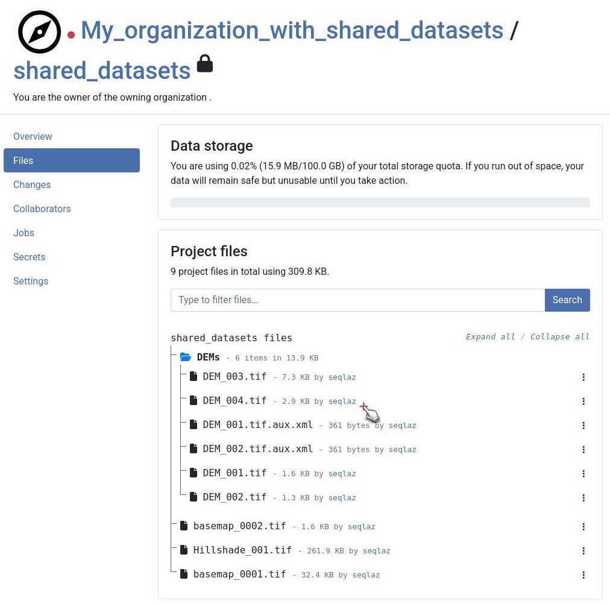

Shared datasets¶
It is possible to use layers stored in a single location — referred to as "shared datasets folder" — across multiple projects.
This can help to reduce storage requirements for large datasets such as orthophoto raster files, land use vector files, etc., as well as ease the management of dataset updates.
There are two possibilities to share data across projects:
- Manual transfer: The to be shared datasets are manually copied to the devices
- Synchronization through QFieldCloud: The to be shared datasets are uploaded and stored in a dedicated project in QFieldCloud accessible to the pre-configured projects.
Managing Localized Data Paths in QGIS¶
Vorbereitung am Schreibtisch
When preparing a new project for QField, make sure the datasets you want to share across multiple projects are stored within the "Localized datasets" folder in QGIS.
Workflow
- In QGIS direct to Settings > Options > Data Sources
- Under the "Localized Data Paths" section add the necessary path where the datasets to be shared are located.
- Restart QGIS to apply the settings. Once correctly added, QGIS, QField/QFieldCloud will treat them as shareable datasets.

{kind=link}
Manual transfer onto portable device in QField¶
QField
To transfer the shared datasets manually in QField, the datasets have to be added into the right directory on your device:
Workflow
- Direct to local QField directory. If you are unsure you can find it by navigating to the "Side Dashboard" > 3-dotted menu > "About QField" 2 Copy your shared datasetse into the directory, ensuring that the datasets are added to the basemap folder. [App Directory]/QField/basemaps on your device. QField will automatically scan this folder for basemaps and other recognizable data.

Configuration of shareable datasets with QFieldCloud¶
QFieldCloud eases the management of shared datasets used in multiple projects recognizing QGIS' localized data settings.
Uploaded cloud projects reference the shared datasets stored in a designated QFieldCloud project named shared_datasets.
This special type of project can be created by the user in advance or is automatically created during a file upload using QFieldSync.
The file structure within the shared_datasets project will reflect the structure of the localized path from which the datasets originate.
For example, if your QGIS Localized Data Path is ./GIS_Common/BaseData/ and you have a file ./GIS_Common/BaseData/Administrative-boundaries.gpkg, it will appear as Administrative-boundaries.gpkg within the shared_datasets cloud project.
Note
Only collaborators whose user role is “manager” or “admin” (directly assigned or as organization owners or admin) can add files to the shared_datasets project.
Preparation of a QGIS Project containing shared datasets¶
Workflow
- Follow the same Desktop Preparation (QGIS) steps outlined above.
- Make sure the Localized Data Paths in QGIS are correctly configured to point to the location of the shared datasets on your computer. This tells QFieldSync which files to treat as "localized" for cloud handling.
- Ensure your shared layers are part of your QGIS project and their paths are relative to one of the configured localized data paths.
Upload of shared datasets to QFieldCloud¶
To upload your shared dataset to QFieldCloud, you need to use QFieldSync.
Workflow
- In QGIS, open your project and use the QFieldSync plugin to upload to or synchronize with QFieldCloud.
- At the beginning of the synchronization process, you will see a new Upload missing localized dataset(s) checkbox.
- Ensure this option is checked.
If you hover over the checkbox, you will see the list of files that will be uploaded.
This checkbox is only available for users with the permission to add files to the
shared_datasetsproject. - Click on the Perform Actions button to proceed.
During the upload phase, a list of the shared and regular project datasets will appear as they are being transferred.
This instructs QFieldSync to find the actual data files referenced by your Localized Data Paths and upload them to the
shared_datasetscloud project.

{kind=link}
Review of the Upload Log¶
After the synchronization is complete, you can check the QFieldSync log. It will detail the files uploaded, including the shared datasets that were sent to QFieldCloud.

{kind=link}
Localization of datasets within the QFieldCloud web interface¶
Once uploaded, these shared datasets will appear in two key places on the QFieldCloud web interface:
- Within the dedicated
shared_datasetsproject itself. - Referenced in the Files tab of any regular cloud project that utilizes them.
Workflow
- Open your project in the QFieldCloud web interface.
- Click on the Files tab.
- Find the section named Shared datasets. This dialogue lists all datasets that have been identified and uploaded as shared/localized resources for your projects.

{kind=link}
Permissions for Shared Datasets¶
Access to a regular project does not automatically grant access to the underlying files stored in the shared_datasets project.
To ensure that collaborators can successfully download and view the shared files (such as base layers or attachments) in the projects that utilize them, you must explicitly grant them access to the shared_datasets project itself.
Workflow
- Open the
shared_datasetsproject in the QFieldCloud web interface. - Navigate to the project's Collaborators tab.
- Add the required users and assign them at least the Reader role. This role safely allows users to list, download, and read the shared files on QField and QFieldSync without giving them permission to modify the central shared data.
Note
While the Reader role is sufficient for viewing and downloading, any collaborator who needs to add, update, or remove files within the shared_datasets project must be assigned the Manager or Admin role.
Troubleshooting Shared Datasets¶
For any cloud project containing shared datasets, QFieldCloud’s web interface will indicate the missing on the cloud (i.e., referenced by any project but have not yet been uploaded into the shared_datasets project) using a red color.
This can be fixed by synchronizing the project again from QGIS with QFieldSync, ensuring the "Upload missing localized dataset(s)" option is checked Synchronization with QFieldSync.
Alternatively, if you have the necessary permissions, you can manage the shared_datasets project directly (see section Synchronizing directly the shared_datasets project).
If you prepare a new QGIS project to use shared files that are already present in your QFieldCloud shared_datasets project, QFieldSync will recognize this.
The "Upload missing localized dataset(s)" checkbox should not appear.
Download to QField¶
Workflow
- Open the project containing the shared datasets and synchronize the project. A key benefit is that the download of these shared localized datasets is managed efficiently by QField. Each shared dataset will only be downloaded once, even if multiple projects use it. This saves storage space and synchronization time.

{kind=link}
Direct synchronization to the shared_datasets project¶
Instead of relying on individual project synchronization to populate the shared_datasets project, users with the right permissions can manage its content more directly.
With QFieldSync¶
Users with "manager" or "admin" permissions for the shared_datasets project can manage its content directly using QFieldSync:
Workflow
Desktop preparation
- In QFieldSync, download the
shared_datasetsproject from QFieldCloud to a local directory on your computer. - You can now add, update, or remove files within the pre-configured file directory of the localized datasets.
- Use QFieldSync (with the
shared_datasetsproject selected) to synchronize these changes directly back to the cloud.

{kind=link}

{kind=link}
Note
The specific user roles must be set for the shared_datasets project as for any other project.
A collaborator with an admin role of a project making use of a shared dataset will not automatically have the permission for the shared_datasets project.
With the QFieldCloud-CLI¶
Administrators can further automate the synchronization of the shared_datasets project by using QFieldCloud’s official CLI tool, qfieldcloud-cli (which is part of the qfieldcloud-sdk Python package).
The tool can be used to synchronize QFieldCloud files from a local directory. It automatically checks if there is a version change of the file contents.
- Login to QFieldCloud using the CLI
$ qfieldcloud-cli login USER PASSWORD
Log in super_user...
Welcome to QFieldCloud, USER.
QFieldCloud has generated a secret token to identify you. Put the token in your in the environment using the following code, so you do not need to write your username and password again:
export QFIELDCLOUD_TOKEN="TOKEN_HERE"
$ export QFIELDCLOUD_TOKEN="TOKEN_HERE"
- List the QFieldCloud projects and get the project ID of the
shared_datasetsproject:
$ qfieldcloud-cli list-projects
Listing projects...
Projects the current user has access to:
| ID | OWNER/NAME | IS PUBLIC |
---------------------------------------------------------------------------
| 90e83606-dce8-4b0d-854a-388904d8a739 | USER/shared_datasets | 0 |
Note
Your project ID will be different
Upload the shared datasets from your local source directory to the shared_datasets project:
qfieldcloud-cli upload-files 'YOUR_PROJECT_ID' "./path/to/your/local/shared/data/"
You can set up this command as a regular cronjob that runs periodically (e.g., daily), or trigger it manually based on other conditions, to keep your shared datasets on QFieldCloud up-to-date.